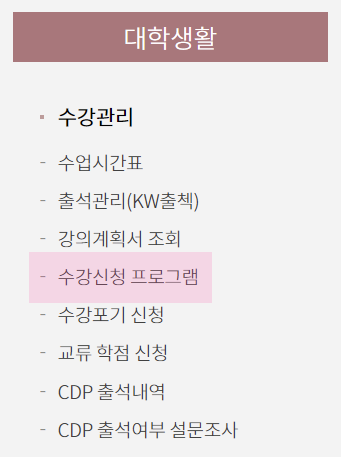
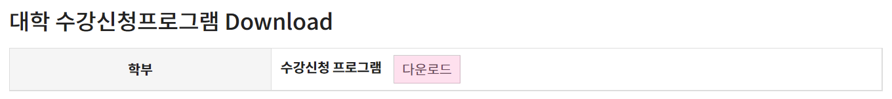
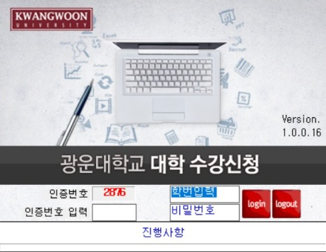
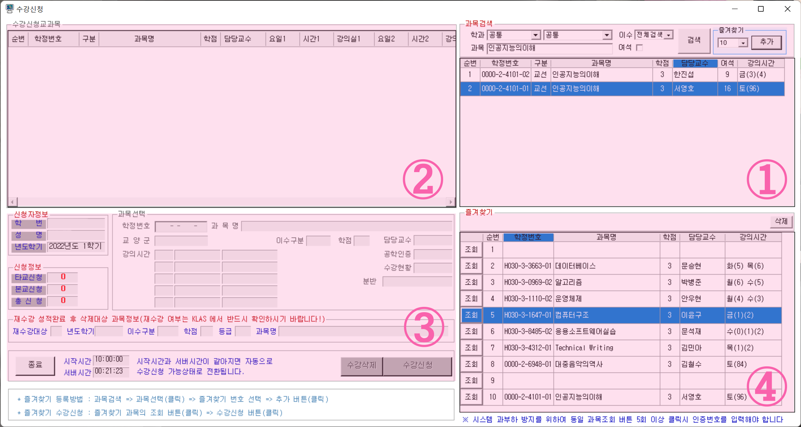
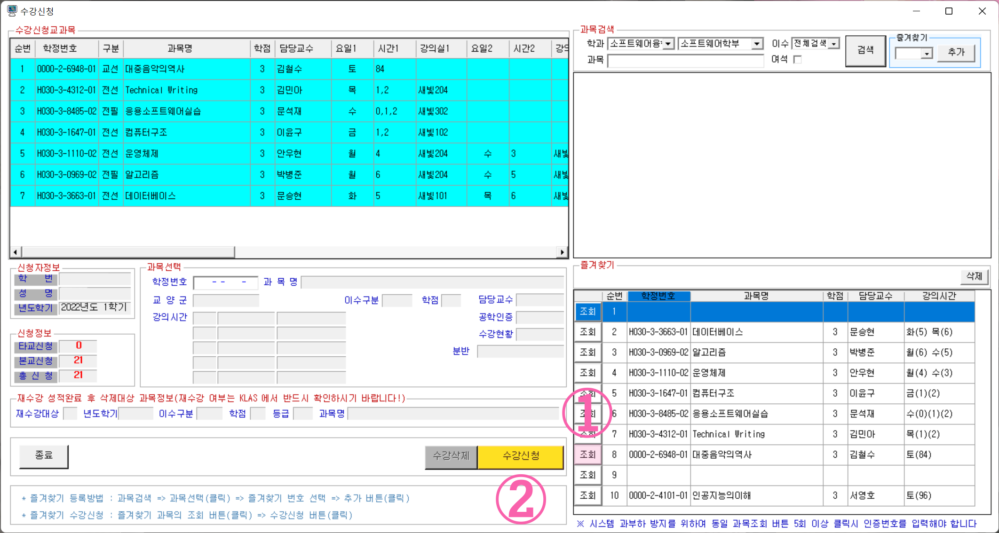

래빛: 수강신청
뿌쓩빠숑삐숑- 단 몇초만에 한 학기가 결정되어버리는 시스템이 있다??
1. 개요
대부분의 고등학교는 매 학기 시간표가 임의로 짜여져 나오지요.
그에 반해, 대학교는 자신이 듣고 싶은 과목을 정한 후, 신청하여 들을 수 있게끔 해 준답니다.
다만 수강 정원 등의 제한이 있는 만큼, 완전히 자유로이 신청할 수 있는 것은 아니며,
졸업요건(필수과목, 전공학점 등)이 충족되게끔 신청하시는 것이 중요해요.
광운대학교의 수강신청 시간은 오전 10시이며,
각 학기별 정확한 날짜는 🌐광운대학교 공지사항 게시판에 수강신청을 검색해보시는 것을 추천드립니다. (학교 홈페이지 미로그인 시 검색결과가 달라질 수 있음)
2. 수강신청 방법
2.1. 수강신청 프로그램의 설치
우선 수강신청을 위해서는 수강신청 프로그램을 설치해야 합니다.
설치 프로그램을 다운로드 하기 위해,
🌐광운대학교 KLAS에 접속해야 해요.
- 광운대학교 KLAS에 접속하고, 학번 및 KLAS 비밀번호로 로그인합니다.
-

상단 메뉴(≡)에서 대학생활 → 수강관리 → 수강신청 프로그램을 클릭합니다.
-

위와 같은 부분에서 '다운로드' 버튼을 누릅니다.
일반적인 프로그램 설치하듯이 설치하시면 되는데, 설치가 끝나면 프로그램에서 재부팅을 요구할 거에요.
이 때 쓰고 계시는 컴퓨터가 재부팅시 설치된 프로그램이 초기화되는
PC방 등이라면, 재부팅 대신 로그오프를 선택해주세요.
그렇게 로그오프 후 로그인하면, 프로그램이 성공적으로 설치되었다는 메세지를 확인할 수 있습니다.
// ※ 로그오프가 보이지 않으면 [ 윈도우 키 + R → 'cmd' 입력 → 'shutdown /l' 입력! ]
위 취소선 부분은 2020학년도까지 쓰이던 예전 수강신청 프로그램에 대한 설명이므로, 따로 읽지 않으셔도 됩니다.
2.2. 수강신청 프로그램에 로그인
평시에는 수강신청 프로그램에 로그인이 되지 않아요.
수강신청 프로그램 로그인은
수강신청 당일 자정부터 가능하거든요.
(예: 수강신청일이 2월 26일이면,
2월 25일 오후 11시 59분에서 1분이 지난 2월 26일 오전 12시부터 접속 가능)
그러니, 신청할 과목을 사전에 정해두셔야 합니다. 선배님 및 동기들의 강의평이나, 에브리타임 강의평가가 큰 도움이 될 거에요.
대망의 수강신청 당일 자정이 되었다면, 설치한 프로그램을 실행해보세요.

여기에
학번과
KLAS 비밀번호, 그리고
인증번호를 입력하고 'Login' 버튼을 눌러 수강신청 프로그램에 접속합니다.

일단 프로그램의 우측 상단 부분부터 설명해드릴게요. (학정번호 직접 신청도 가능하지만, 시간상 손해인 경우가 대부분이므로 여기서는 설명하지 않습니다)
-
과목을 검색하는 부분입니다. 학과를 지정해 검색할 수도 있고, 과목 이름으로 검색할 수도 있습니다.
과목을 검색해놓고, 마우스로 한 번 클릭해 선택한 다음 '추가' 버튼을 눌러 아래 ④번 즐겨찾기 영역에 추가할 수 있답니다.
-
수강신청이 완료된 과목을 보여주는 부분입니다. 이 이미지는 수강신청 전에 캡쳐한 이미지기 때문에, 아무것도 없어야 정상이에요.
-
신청자 정보와, 현재 신청학점, 재수강 여부, 서버 시간, 그리고 선택한 과목의 과목 정보, 수강삭제 버튼 및 수강신청 버튼, 종료 버튼이 있는 부분입니다. 아래의 시작 시간과 서버 시간이 같아지기 전까지는 이 영역이 비활성화되어 있습니다.
-
즐겨찾기한 과목의 목록과 과목 조회 버튼이 있는 부분입니다.
반드시
즐겨찾기에 정확한 강의를 추가했는지 확인 또 확인하세요!!!
과목 이름은 같아도, 학정번호가 다른(즉, 다른 시간대의) 수업일 수도 있거든요.
꼭 내가 미리 선택한 과목과 학정번호 및 시간대가 일치하는지 확인하세요!
다른 과목을 추가했다는 사실을 수강신청 도중에 알아버리는 참사가 일어나면 골치아프거든요.
2학년 1학기때 제가 이래서 광광우럭습니다ㅠㅠㅠ
더불어,
즐겨찾기에 과목을 넣을 때 우선순위가 높은 과목을 8번부터 역순으로 놓으세요. 보통 사람 심리상 1번에 놓는데, 이러면 '조회' 버튼과 '수강신청' 버튼 사이 거리가 길어 남들보다 느려지게 됩니다. '수강신청' 버튼을 빠르게 클릭하기 편한 위치는 8번이므로, 여기부터 7번, 6번… 의 순서대로 신청하면 남들보다 신청 시간에서 우위를 점할 수 있습니다.
2.3. 수강신청 실전

2.2에서 즐겨찾기에 과목을 추가했다는 것을 전제 하에 설명합니다.
프로그램에서 수강신청 시작시간과 서버시간이 같아질 경우, 확인 버튼 하나가 있는
"수강신청이 시작되었습니다!" 창이 뜨게 됩니다. (
이 창은 엔터키를 한 번만 눌러 빠르게 없앨 수 있습니다만,
절대 여러번 누르지 마세요! 프로그램이 종료될 수 있습니다.)
-
'조회' 버튼입니다. 이 버튼을 누르면 좌측 '과목선택' 영역에 과목 정보가 뜨게 되는데, 뜨자마자 재빠르게 '수강신청' 버튼을 눌러야 정상 신청됩니다. (과목이 만석인 경우 "이 과목은 만석입니다" 라는 창이 뜨는데, 당황하지 말고 다음 순번 즐겨찾기로 넘어가야 합니다)
-
'수강신청' 버튼입니다. '조회' 후 이 버튼을 눌러야 좌측 상단 '수강신청교과목' 영역에 해당 과목이 올라가게 되고, 정상 신청됩니다.
일반적인 경우 신청 가능 학점은
최소 12학점 ~ 최대 19학점임에 유의하세요!
//위 사진은 직전학기 평점 3.5 이상이라, 22학점까지 신청 가능한 경우입니다. 해당 조건이 충족되면 저렇게 그냥 신청 가능해요.
3. 수강신청 잘 하는법
3.1. 에브리타임 강의평가를 이용
수업을 들어보지 않은 사람은 그 수업이 좋은지 나쁜지를 모릅니다.
교수님들의 성향을 대강 아시는 재학생분들에 비해,
신입생분들은 각 교수님들의 성향이나 수업 스타일에 대한 지식이 거의 없을거에요.
그렇기 때문에, 강의평가에 많이 의존하시는 것이 좋아요.
3.2. 선배님들께 여쭤보기
알고 계시는 선배님들이 많다면 가장 정확한 방법이라고 할 수 있겠습니다!
강의평가에는 쓰지 못하는 노골적인 얘기도 들을 수 있고,
공부는 어떻게 하면 좋고 하는 팁까지 모두 얻을 수 있어요.
3.3. 상대적으로 인기가 덜한 강의 노리기
다른 일반적인 강의보다는 상대적으로 덜 인기인 1교시, 8~10교시(야간) 및
역사, 철학 계열 강의를 노려 신청하는 방법이에요.
신청하는 과목이 어느 정도만 적성에 맞으면 가장 안전하고 좋은 방법이랍니다.